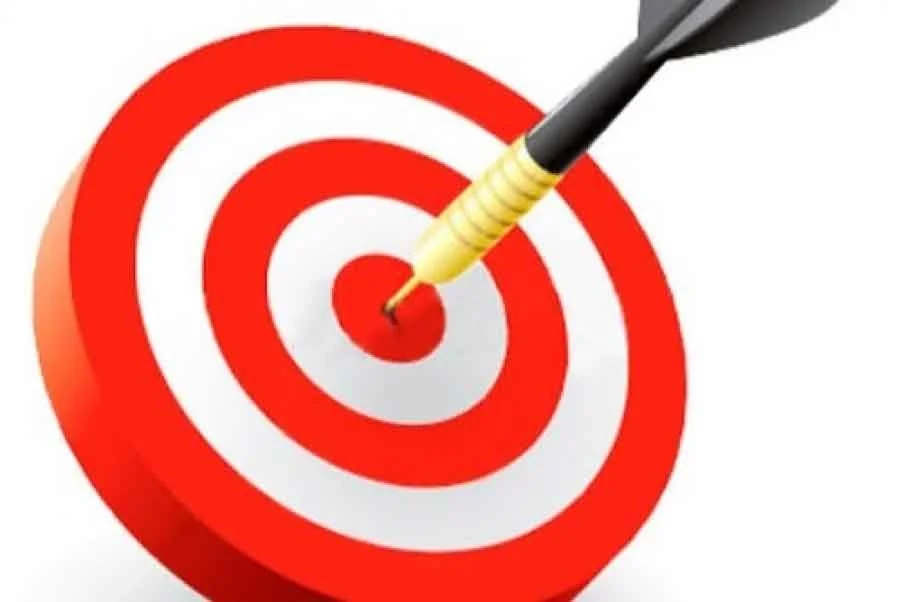
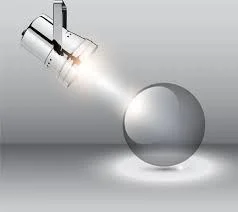

The Charitable Foundation “Ukraine Native”, a non-profit organisation founded by Arsen Karapetian and Oksana Obertynska, grew up on a volunteer initiative to help Ukrainian citizens who have found themselves in a difficult situation due to Russian aggression and our desperate, courageous and brave defenders who fearlessly fight for our country.
This non-governmental project was created with civilian medics and volunteers being involved to provide medical assistance during the Russia-Ukraine war in some battle areas of Kyiv, Donetsk and Luhansk regions. The project is implemented by the Charitable Organisation “Ukraine Native” and based on the memorandum of cooperation and partnership between the Public Organisation “Agency for Sustainable Development of Citizens” and the Charitable Organisation “Mykola Pyrohov’s First Voluntary Mobile Hospital”. Today it is the second medical project operating in the war zone according to the requirements of the law of Ukraine On Charity And Volunteering In Ukraine.
We believe that our experience to combine the enthusiasm and flexibility of the volunteer movement with the systemic and strategic nature of state approaches makes the Charitable Foundation “Ukraine Native” a unique project that will become a “brick” and then the basis of future affordable and highly effective mobile medicine in Ukraine.
Take care of Ukraine! Save the world!
Now Ukrainians are struggling with the greatest challenge of the 21st century. Democracy or tyranny, prosperity or endless corruption and stagnation, freedom or slavery. It is not just a conflict, it is a battle of the modern civilised world against the aggressive Middle Ages. If Ukraine fails to survive, the whole civilisation will be thrown back for decades. We must stop this aggression, the Russia-Ukraine war. We are not allowed to fail!
And you can help us with funds and support to overcome this plague, the fierce enemy’s aggression, the war!
DONATE TODAY
About us and our activity
The Charitable Foundation “Ukraine Native” always stays by the side of Ukrainian defenders, and sometimes leads the way like guardian angels. The battlefront is not only the forefront of the Russia-Ukraine war. It is a number of actions taking place on the territory where the war for Ukraine is ongoing. These are hospitals, military training areas, mass media, warehouses, volunteers, training, rehabilitation and support for military families…
The mission of the Charitable Organisation “Ukraine Native” is to unite progressive community, talented, caring young people, patriotic Ukrainians and foreign partners to work systematically for the benefit of our Ukraine and its precious people, to keep our defenders, their families and the whole population healthy, support scientific and educational projects aimed at ensuring this assistance, build a renewed peaceful and prosperous Ukraine together!
One of the important areas is to provide medical assistance in the area of active hostilities during the Russia-Ukraine war in some areas of Kyiv, Donetsk and Luhansk regions, as well as support those who were defending and continue to defend Ukraine from the aggressor's troops. The Foundation’s team is convinced that veterans of the Russia-Ukraine war must become successful drivers of society's development. Rehabilitation assistance, support and development of our defenders' own business ambitions.
We were alongside the defenders of Ukraine in the most hostile areas of the battlefront. We help them when they come for rotation or training. We support them when they try to live a peaceful life again. The Charitable Foundation “Ukraine Native” works to ensure that defenders are healthy and do their job effectively defending the country. Our weapons are our experts and experience. And millions of benefactors who have donated their funds and thus provided us an opportunity to help our defenders and their families on their behalf. That’s why our greatest force is people who believe in the army of Ukraine and are ready to hold on as long as necessary.
EFFECTIVENESS
We aim to get the highest results in the mission of the Charitable Foundation “UKRAINE NATIVE”.

TRANSPARENCY
We have been working and continue to work together with you in a transparent and comprehensive way, involving the general public and mass media representatives from the very start and till the end result and full implementation of our projects and plans.

PROFESSIONALISM
Constructiveness and responsibility to all the elements of our activity, involving the best and competent experts in our team.
EFFICIENCY
In each of our projects, we persistently aim to get the highest result of the joint resources and efforts we made together with you.
HONESTY
Transparency and openness of our joint cooperation for common cause – we are always open to communicate and honest with ourselves and society.
TEAM WORK
We work together as a team of like-minded people to achieve a common goal and fulfil our mission.
Support the hospital
For transfers in Ukraine currency:
| Beneficiary: |
CO CF UKRAINE NATIVE |
| IBAN: |
UA413806340000026000253207001 |
| Beneficiary's bank: |
PuJSC "CB "ACCORDBANK"
Stetsenka Str. 6, Kyiv, Ukraine |
| Identification code: |
41292196 |
For transfers in euro currency:
DETAILS of “CB “ACCORDBANK” PuJSC EUR:
| Beneficiary: |
CO CF UKRAINE NATIVE |
| IBAN: |
UA413806340000026000253207001 |
| Beneficiary’s bank: |
ACCT. 0105442396
PuJSC "CB "ACCORDBANK"
Stetsenka Str. 6, Kyiv, Ukraine
|
| SWIFT code: |
ACDCUAUK |
For transfers in U.S. dollar currency:
DETAILS of “CB “ACCORDBANK” PuJSC USD:
| Beneficiary: |
CO CF UKRAINE NATIVE |
| IBAN: |
UA413806340000026000253207001 |
| Beneficiary’s bank: |
PuJSC "CB "ACCORDBANK"
Stetsenka Str. 6, Kyiv, Ukraine
|
| SWIFT code: |
ACDCUAUK |